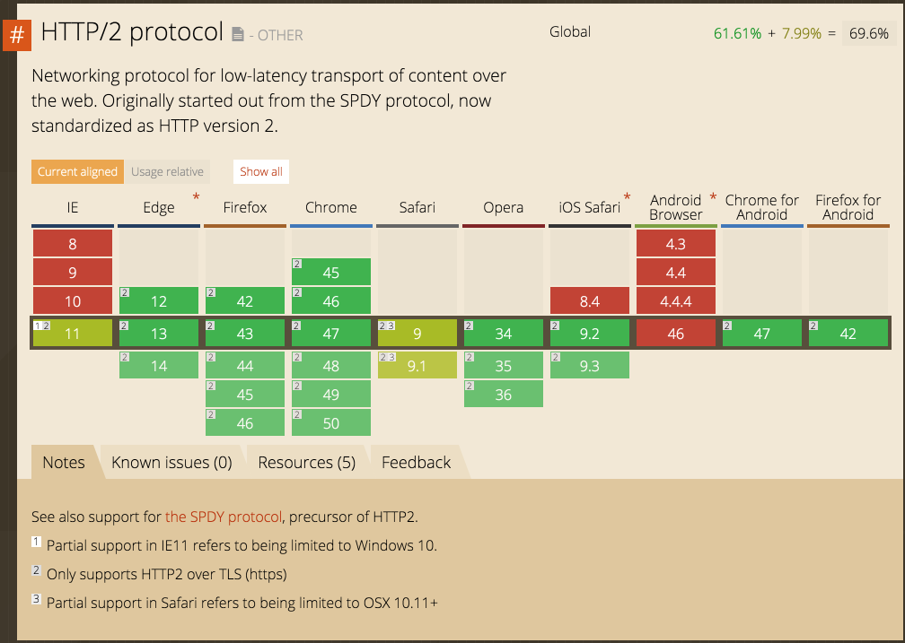

name: cover <img src="assets/img/peerigon.svg" style="width: 20vw; margin-top: 5vh;"> # State of Web APIs .slide-cover[ HTTP, WebSockets, WebRTC<br> ] .slide-author[ Michael Jaser<br> michael.jaser@peerigon.com ] --- layout: true class: center, middle .slide-header-left[ State of Web APIs ] .slide-header-right[ MAPR Seminar ] --- # Web API - an API accessible via Web Protocols - common format is JSON - common pattern is RESTful --- # Protocols --- ## Networking APIs 2016 <small>Source: Ilya Grigorik - High Performance Browser Networking</small> --- ## HTTP/1.1 --- >„The Hypertext Transfer Protocol (HTTP) is an application-level protocol for distributed, collaborative, hypermedia information systems. It is a generic, stateless, protocol that can be used for many tasks beyond its use for hypertext, such as name servers and distributed object management systems, through extension of its request methods, error codes and headers. A feature of HTTP is the typing and negotiation of data representation, allowing systems to be built independently of the data being transferred." RFC 2616: HTTP/1.1 June 1999 --- - specified by the HTTP Working Group (HTTP-WG) - RFC 2068 - 1997 --- ## Example ``` GET /favicon.ico HTTP/1.1 Host: www.website.org User-Agent: Mozilla/5.0 (Macintosh; Intel Mac OS X 10_7_4)... (snip) Accept: */* Referer: http://website.org/ Connection: close Accept-Encoding: gzip,deflate,sdch Accept-Language: en-US,en;q=0.8 Accept-Charset: ISO-8859-1,utf-8;q=0.7,*;q=0.3 Cookie: __qca=P0-800083390... (snip) ``` --- - most common protocol - building block for most web applications - mature and reliable --- # HTTP/2 --- - RFC 7540 - approved and published in 2015 - implemented by Chrome, Firefox, ... - unchanged Semantics --- ## Improvements over HTTP/1.1 --- ## Header Compression --- ## Binary Framing <small>Source: Ilya Grigorik - High Performance Browser Networking</small> --- --- --- ## Server Push <small>Source: Ilya Grigorik - High Performance Browser Networking</small> --- ## Browser Support  <small>Source: caniuse.com</small> --- # WebSockets - bidirectional - message-oriented streaming of text and binary data - supported by most browsers --- ## Example ```javascript const ws = new WebSocket("wss://localhost:3003/"); ws.onmessage = function (event) { //gets called on every message from server }; ws.onopen = function () { //connection established //send message to server ws.send("hello server!"); }; ``` --- --- --- <small>Source: caniuse.com</small> --- # WebRTC --- - Web Real-Time Communication - consists of various standards, protocols and JavaScript APIs - offers peer-to-peer connections between browsers - supports audio, video, and data sharing --- ## RTCDataChannel - send/receive application data - like WebSockets but peer-to-peer --- ## Example ```javascript var signalingChannel = new SignalingChannel(); var peerConnection = new RTCPeerConnection(iceConfig); var dataChannel = peerConnection.createDataChannel("namedChannel", {reliable: false}); dataChannel.onopen = function() { //connection established //send message dataChannel.send("Hello Peer"); } //handle received messages dataChannel.onmessage = function(msg) { console.log("receivedMessage", msg); } ``` --- <small>Source: caniuse.com</small> --- ## Simple Benchmark - request 63 datasets from server - format: JSON - tested on localhost - using Chrome 47 --- ## Results <table> <tr> <td><strong>Protocol</strong></td> <td><strong>Duration</strong></td> </tr> <tr> <td>HTTP/1.2 </td> <td>112,6 ms</td> </tr> <tr> <td>HTTP/2 </td> <td>133,8 ms</td> </tr> <tr> <td>WebSockets</td> <td>88,4 ms</td> </tr> </table> <br><br> (lower is better) --- ## Conclusion - many options - should be abstracted for developer convenience - many different and conflicting requirementsspos --- # Thank you michael.jaser@peerigon.com <br> <br> @mmeaku <br> @peerigon